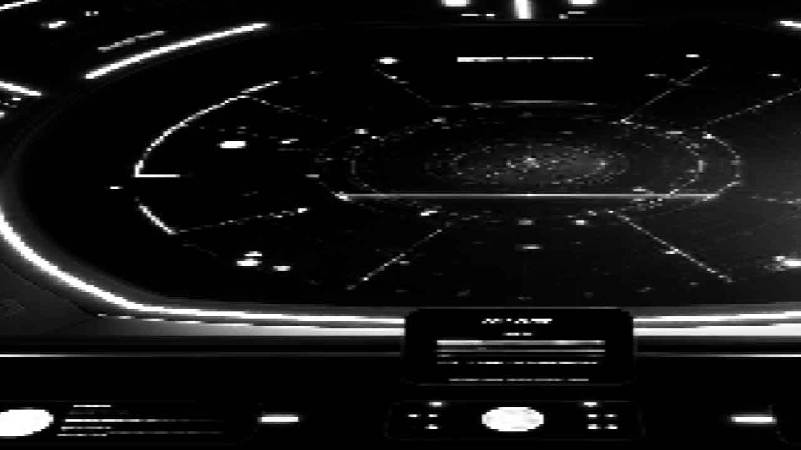

You open the star map display in front of you. The screen flickers with thousands of star systems, some of which are mapped and others still unexplored. The adventure lies in the unknown, Captain.
Which direction will you choose?
The Nebula of D'khari
A colorful nebula that’s rumored to house an ancient alien fleet. Dangerous, but rich with potential for discovery.
The Dark Zone
A region of space known for strange electromagnetic anomalies and missing ships. Many have entered, but few have returned...